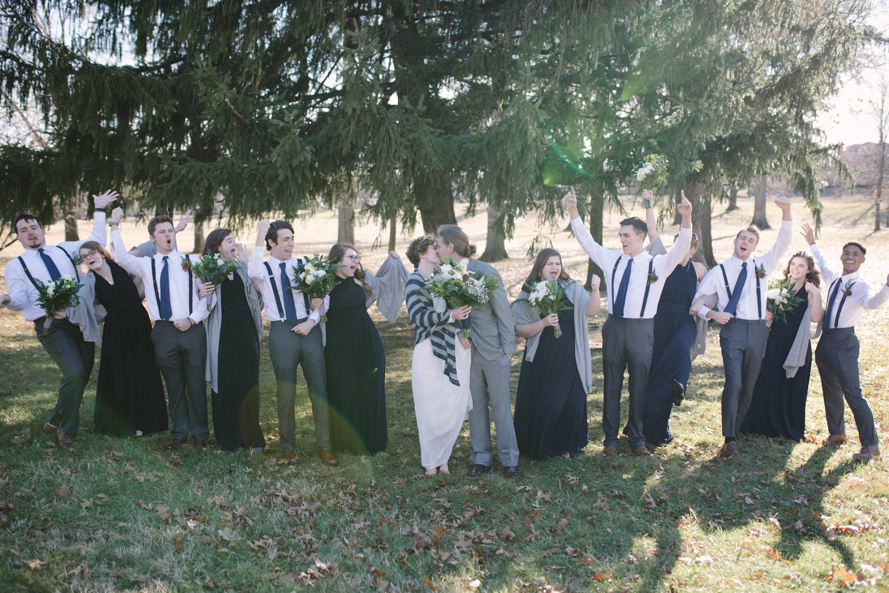
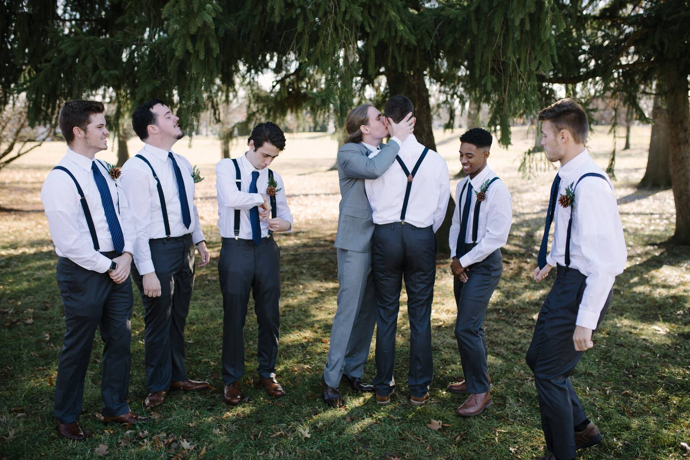

More Photos

Our Bridal Party
Our friends being excited for us and lovingly awkward about it!

Groomsmen
These are still some of my best friends to this day, all of which I met through YL. Wether through working at YL camp, leading toegther, or growing up together. The one to the left of me, is my best friend, and best man Kegan, we grew up together and discovered YL together. I truly don't know where I would be in life without him.

Engagement Photo
One of the very many photos from that day, but one of the few that fit this rectangular format!